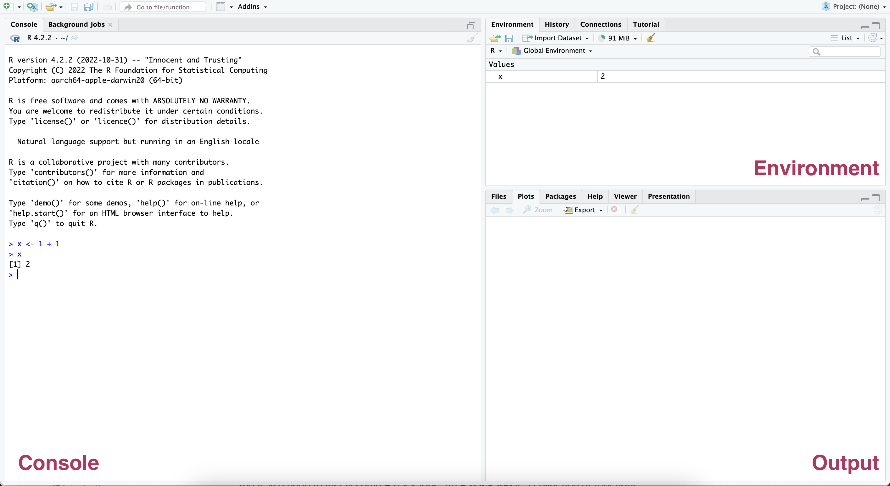
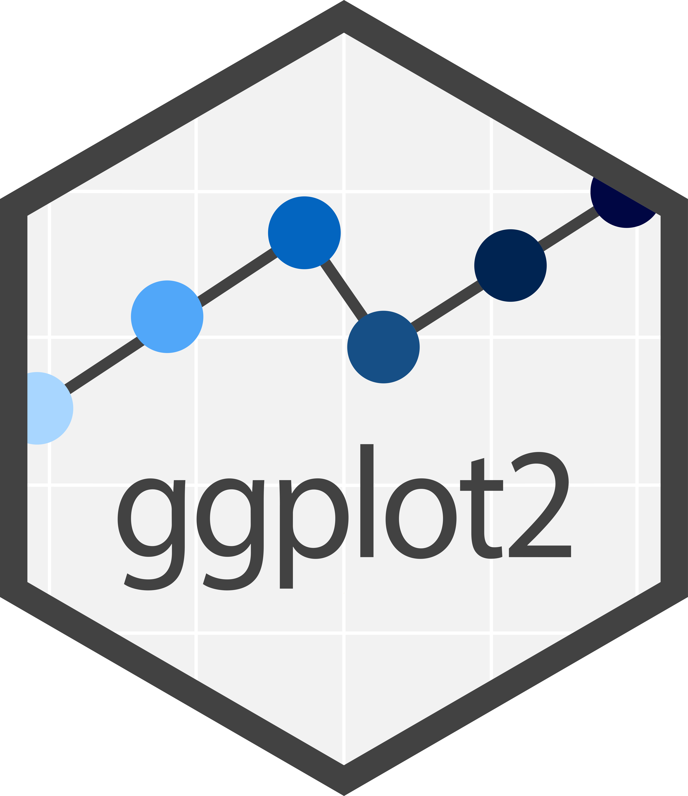

install.packages("jfa")Getting Started
This book is intended for auditors that want to obtain the knowledge and skill to utilize statistical audit sampling in their practice using the R programming language. It covers an array of traditional and innovative statistical tools that are available to auditors, explaining their function, the underlying assumptions, and when they are best utilized. In addition, it offers practical guidance on integrating advanced statistical sampling methodology into audit practice and demonstrates its value through real-world case studies. It is our hope that this book will serve as a valuable resource for auditors looking to effectively and efficiently utilize statistical methods in their practice.
The aim of this book is to address the need for a clear and transparent explanation of the use of statistical sampling methodology in audit practice. Most guidance about audit sampling (e.g., American Institute of Certified Public Accountants (AICPA) (2016a); American Institute of Certified Public Accountants (AICPA) (2016b)) lacks sufficient detail to allow for full transparency or a deep understanding. Additionally, the implementation of statistical sampling methodology in practice is often even less transparent, as theory and calculations are hidden from auditors in commercial closed-source tools or in Excel sheets from audit guides used internally by audit firms (one notable exception is Stewart (2012)). Thus, while attempting to comprehend the theoretical aspects of statistical audit sampling, auditors may encounter numerous relevant questions that are left unanswered by these tools. This book aims to clarify the statistical methodology utilized in practice, thereby empowering auditors through a comprehensive explanation.
This book discusses two philosphies to statistical audit sampling: the classical (frequentist) philosophy and the Bayesian philosophy. By contrasting these two approaches, the book elucidates the statistical theory that underlies commonly used audit sampling techniques and illustrates how to utilize these techniques in accordance with international auditing standards. Additionally, the book demonstrates the use of Bayesian statistical methods in auditing practice and highlights the practical advantages that these methods can offer for auditors.
The structure of this book is as follows: Chapter 2 introduces the basics of the R programming language. Chapter 3 discusses the fundamental statistical theory relevant to classical and Bayesian audit sampling. Subsequent chapters 4, 5, 6, 7 and 8 provide a more in-depth exploration of the use of these methods for statistical planning, selection, and evaluation of audit samples. These chapters illustrate the practical differences and similarities between the classical and the Bayesian approach through code and examples, thus requiring minimal programming knowledge to follow along. Finally, Chapter 9 and 10 discuss other open-source software implementations of audit sampling using R.
In each chapter, we aim to adhere to a consistent structure: beginning with motivating examples to provide a broader context, and then delving into the specifics. Every section of the book is accompanied by exercises designed to reinforce the concepts learned. Although it may be tempting to skip the exercises, the most effective way to learn is by applying the concepts to actual problems through practice.
Prerequisites
To run the code in this book, you will need three things: R, RStudio, and the jfa package.
R
The Comprehensive R Archive Network (CRAN) is a collection of mirror servers distributed globally that can be utilized to obtain both R and R packages. When seeking to download R, it is recommended to utilize the cloud mirror located at https://cloud.r-project.org, as it will automatically determine the most suitable mirror for your location. Please ensure that you have at least R 3.5.0 installed for the purposes of this book.
It is advisable to regularly update R, as new major versions are released annually and minor releases occur two to three times per year. While upgrading can be inconvenient, particularly for major versions which require the reinstallation of all packages, failing to do so will only exacerbate the issue.
RStudio
RStudio is an Integrated Development Environment (IDE) specifically designed for the R programming language. It can be downloaded and installed from the official website (https://posit.co/downloads/). RStudio undergoes updates several times a year, and users will be notified when a new version becomes available. It is recommended to regularly upgrade RStudio to access the latest features. Please ensure that you have at least RStudio 1.0.0 installed for the purposes of this book.
When you start RStudio, you’ll see three important regions in the interface: the console, the environment and the output panel.

The console in the left panel allows you to run R code. To execute some R code, type the code in the console (e.g., 1 + 1) and press Enter. When you stored the results of a computation in a new variable (e.g., x <- 1 + 1), the variable is displayed in the environment in the top right panel. The environment allows you to keep track of the objects you have created during your R session. Finally, any plots that you request are displayed in the output panel in the bottom right.
jfa
R has many packages and libraries that extend its capabilities and provide additional functions and tools for data analysis and visualization. R packages are the core building blocks of reproducible R code. They consist of reusable functions, the documentation describing how to utilize them, and sample data. Some popular packages include dplyr for data manipulation, ggplot2 for data visualization, and caret for machine learning. If you want to learn more about creating your own R package, Wickam & Brian (2022) provide an excellent first-hand description of the principles and practices of creating R packages.
dplyr

ggplot2
jfa
dplyr package assists with data manipulation, the (b) ggplot2 package supports data visualization, and the (c) jfa package facilitates statistical auditing.
To illustrate its concepts and ideas, this book uses the jfa package, an R package for statistical auditing, which can also be downloaded from CRAN. This can be done via the install.packages() function by providing the package name in quotes. Thus, before running the examples in this book, you should install the jfa package by running the following command in R:
Once you have installed a package, you must load it into every R session. To load a package into your R session, call library() and provide the name of the package (without quotes) that you want to load. For example, before running the examples in this book, you should load the jfa package with:
R packages are updated regularly. To update a package in your R library you should call update.packages() and provide the name of the package that you want to update in quotes. For example, each time there is a new release of the jfa package, you can update it by running:
update.packages("jfa")If you want to look at the source code of the jfa package, see the package website at https://koenderks.github.io/jfa.
Running R Code
The code in this book appears as follows:
1 + 1
#> [1] 2When executing the same code within your local console, the resulting output will appear as follows:
> 1 + 1
[1] 2There are two primary distinctions between the use of a console and the presentation of code in the book. Firstly, in a console, the user inputs their code after the prompt symbol (>) while the book does not display this symbol. Secondly, the output in the book is commented out with #>, while in a console it is displayed directly after the inputted code. Hence, those working with an electronic version of the book can directly copy code from the book to the console.
Colophon
An online version of this book is available at https://koenderks.github.io/sasr/. The source code of the book is available at https://github.com/koenderks/sasr.
This book was built using the following R packages:
sessioninfo::session_info()
#> ─ Session info ────────────────────────────────────────────────────────────
#> setting value
#> version R version 4.4.3 (2025-02-28)
#> os macOS Sonoma 14.7.4
#> system aarch64, darwin20
#> ui X11
#> language (EN)
#> collate en_US.UTF-8
#> ctype en_US.UTF-8
#> tz UTC
#> date 2025-04-01
#> pandoc 3.4 @ /Applications/quarto/bin/tools/ (via rmarkdown)
#> quarto 1.6.42 @ /usr/local/bin/quarto
#>
#> ─ Packages ────────────────────────────────────────────────────────────────
#> ! package * version date (UTC) lib source
#> P cachem 1.1.0 2024-05-16 [?] CRAN (R 4.4.1)
#> P cli 3.6.4 2025-02-13 [?] CRAN (R 4.4.1)
#> P codetools 0.2-20 2024-03-31 [?] CRAN (R 4.4.3)
#> P colorspace 2.1-1 2024-07-26 [?] CRAN (R 4.4.1)
#> P digest 0.6.37 2024-08-19 [?] CRAN (R 4.4.1)
#> P downlit * 0.4.4 2024-06-10 [?] CRAN (R 4.4.0)
#> P evaluate 1.0.3 2025-01-10 [?] CRAN (R 4.4.1)
#> P fastmap 1.2.0 2024-05-15 [?] CRAN (R 4.4.1)
#> P ggplot2 * 3.5.1 2024-04-23 [?] CRAN (R 4.4.0)
#> P glue 1.8.0 2024-09-30 [?] CRAN (R 4.4.1)
#> P gridExtra 2.3 2017-09-09 [?] CRAN (R 4.4.1)
#> P gtable 0.3.6 2024-10-25 [?] CRAN (R 4.4.1)
#> P htmltools 0.5.8.1 2024-04-04 [?] CRAN (R 4.4.1)
#> P inline 0.3.21 2025-01-09 [?] CRAN (R 4.4.1)
#> P jfa * 0.7.3 2025-03-10 [?] CRAN (R 4.4.1)
#> P jsonlite 1.9.1 2025-03-03 [?] CRAN (R 4.4.1)
#> P knitr 1.49 2024-11-08 [?] CRAN (R 4.4.1)
#> P lifecycle 1.0.4 2023-11-07 [?] CRAN (R 4.4.1)
#> P loo 2.8.0 2024-07-03 [?] CRAN (R 4.4.0)
#> P magrittr 2.0.3 2022-03-30 [?] CRAN (R 4.4.1)
#> P matrixStats 1.5.0 2025-01-07 [?] CRAN (R 4.4.1)
#> P memoise 2.0.1 2021-11-26 [?] CRAN (R 4.4.0)
#> P munsell 0.5.1 2024-04-01 [?] CRAN (R 4.4.1)
#> P pillar 1.10.1 2025-01-07 [?] CRAN (R 4.4.1)
#> P pkgbuild 1.4.6 2025-01-16 [?] CRAN (R 4.4.1)
#> P pkgconfig 2.0.3 2019-09-22 [?] CRAN (R 4.4.1)
#> P QuickJSR 1.6.0 2025-02-26 [?] CRAN (R 4.4.1)
#> P R6 2.6.1 2025-02-15 [?] CRAN (R 4.4.1)
#> P Rcpp 1.0.14 2025-01-12 [?] CRAN (R 4.4.1)
#> P RcppParallel 5.1.10 2025-01-24 [?] CRAN (R 4.4.1)
#> renv 1.1.2 2025-03-03 [1] CRAN (R 4.4.1)
#> P rlang 1.1.5 2025-01-17 [?] CRAN (R 4.4.1)
#> P rmarkdown 2.29 2024-11-04 [?] CRAN (R 4.4.1)
#> P rstan 2.32.6 2024-03-05 [?] CRAN (R 4.4.3)
#> P scales 1.3.0 2023-11-28 [?] CRAN (R 4.4.0)
#> P sessioninfo 1.2.3 2025-02-05 [?] CRAN (R 4.4.1)
#> P StanHeaders 2.32.10 2024-07-15 [?] CRAN (R 4.4.1)
#> P tibble 3.2.1 2023-03-20 [?] CRAN (R 4.4.0)
#> P vctrs 0.6.5 2023-12-01 [?] CRAN (R 4.4.0)
#> P withr 3.0.2 2024-10-28 [?] CRAN (R 4.4.1)
#> P xfun 0.51 2025-02-19 [?] CRAN (R 4.4.1)
#> P xml2 * 1.3.7 2025-02-28 [?] CRAN (R 4.4.1)
#>
#> [1] /Users/runner/work/sasr/sasr/renv/library/macos/R-4.4/aarch64-apple-darwin20
#> [2] /Users/runner/Library/Caches/org.R-project.R/R/renv/sandbox/macos/R-4.4/aarch64-apple-darwin20/f7156815
#>
#> * ── Packages attached to the search path.
#> P ── Loaded and on-disk path mismatch.
#>
#> ───────────────────────────────────────────────────────────────────────────